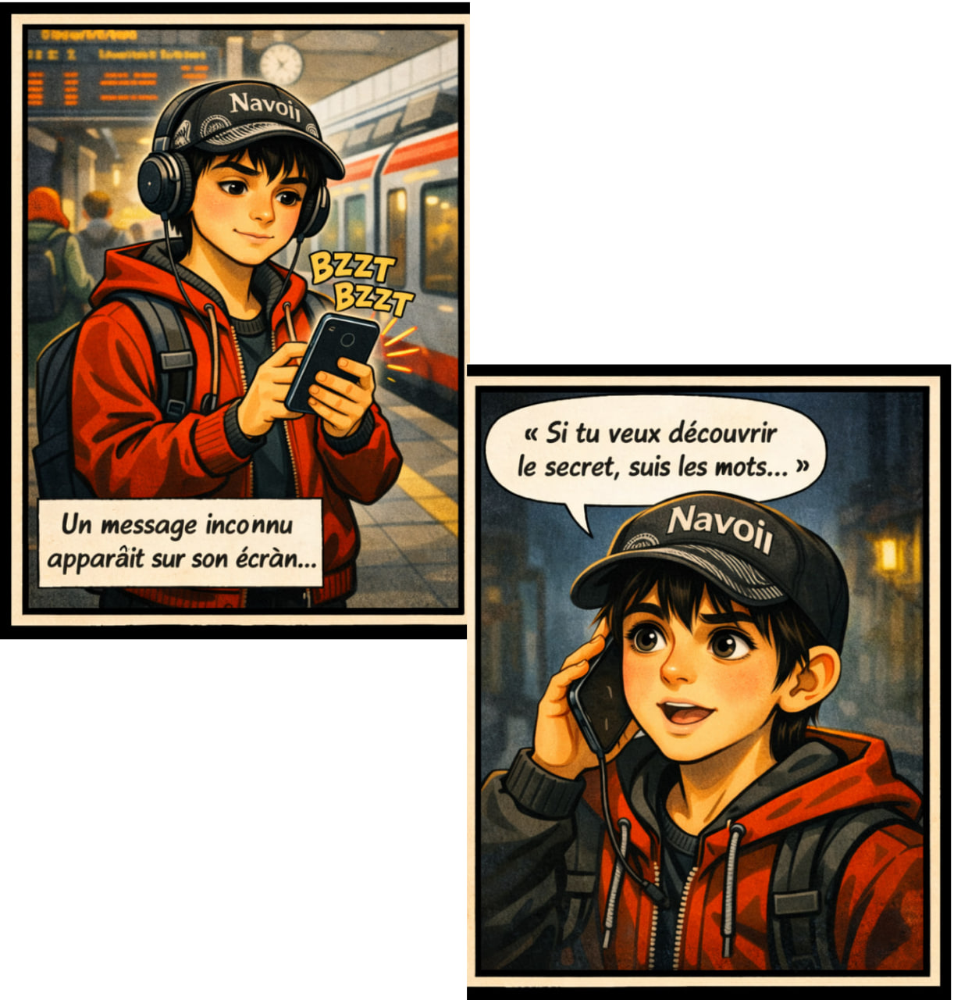

Un jour d’été, Diyor rentrait tranquillement chez lui.
Comme toujours, il écoutait de la musique et rêvait de voyages lointains.
Il adorait découvrir le monde, les langues et les cultures.
Dans sa tête, Paris, Rome et Tokyo se mélangeaient comme dans un film.
Mais ce jour-là, quelque chose d’étrange allait changer sa vie…
Son téléphone vibra soudainement.
Il a reçu un message vocal.
Cliquez sur le bouton ci-dessous pour écouter le message.
